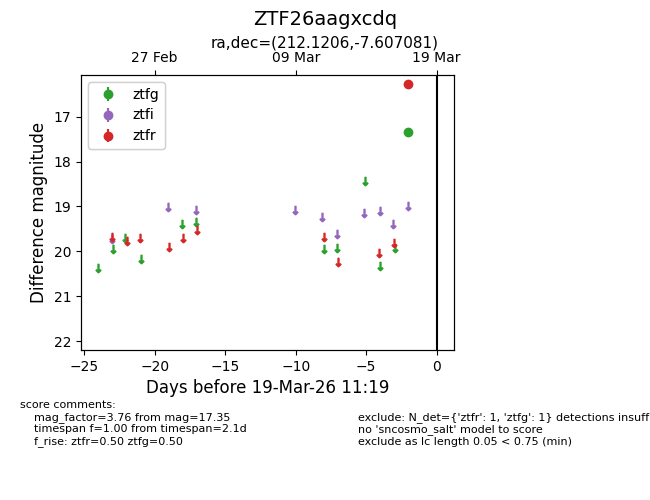
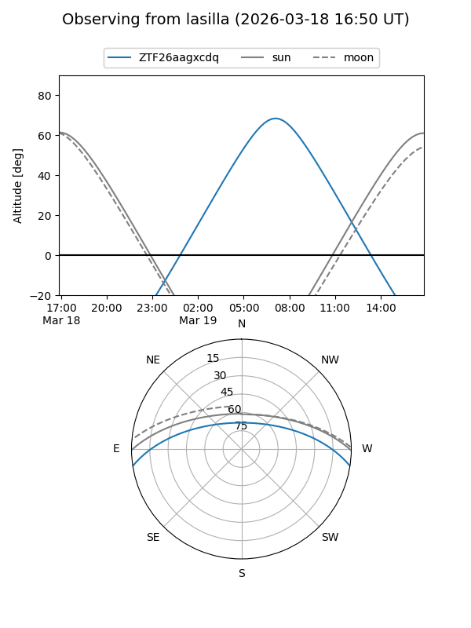
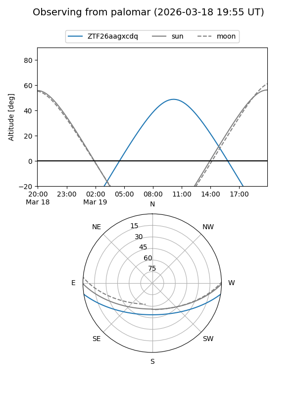

ZTF26aagxcdq
Target ZTF26aagxcdq at 2026-03-19 11:21
Aliases and brokers:
FINK: link
Lasair: link
ALeRCE: link
alt names
ZTF26aagxcdq (ztf,fink_ztf)
Coordinates:
equatorial (ra, dec) = 212.1206,-7.60708
equatorial (HMS+DMS) = 14:08:28.94,-07:36:25.49
galactic (l, b) = (333.9172,+50.57119)
Flags:
Photometry:
last ztfg=17.35, ztfr=16.27
1 ztfg, 1 ztfr detections
Lightcurve

Visibility


Additional plots